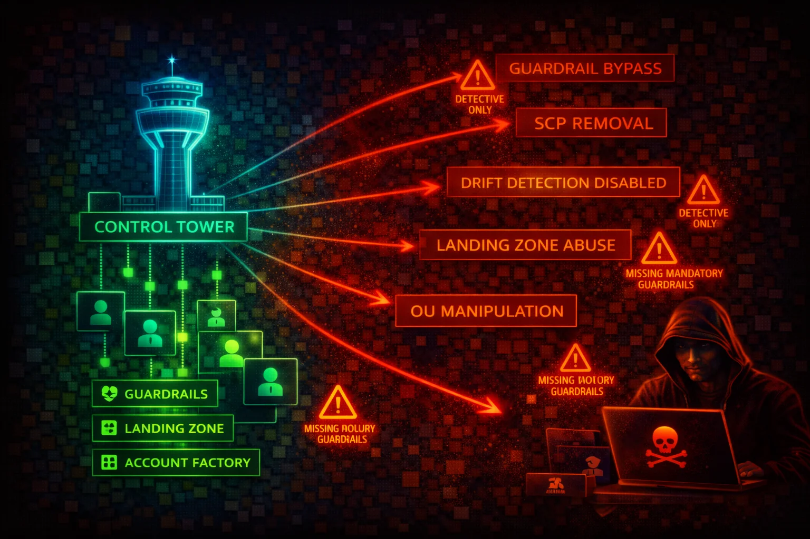

AWS Control Tower orchestrates multi-account governance by deploying a landing zone with guardrails (preventive, detective, proactive), Account Factory, and centralized logging. Compromising the management account or disabling controls grants unrestricted access across the entire organization.
Pre-configured secure multi-account environment. Preventive controls (SCPs), detective controls (Config rules), and proactive controls (CloudFormation Hooks). Mandatory controls cannot be disabled.
Standardized account provisioning via Service Catalog. Creates AWSControlTowerExecution role in every member account with AdministratorAccess, trusting the management account root.
Compromise of the management account means full admin access to every enrolled member account via AWSControlTowerExecution. Disabling controls removes guardrails organization-wide. Drift introduced by an attacker can disable security detection without obvious alerts.
aws controltower list-landing-zonesaws controltower list-enabled-controls \
--target-identifier arn:aws:organizations::123456789012:ou/o-abc/ou-abc-xyzaws controltower list-enabled-controls \
--target-identifier OU_ARN \
--filter '{"driftStatuses":["DRIFTED"]}'aws controltower list-baselinesaws organizations list-accounts \
--query 'Accounts[*].[Id,Name,Status]' --output tableaws sts assume-role \
--role-arn arn:aws:iam::MEMBER_ACCOUNT_ID:role/AWSControlTowerExecution \
--role-session-name ct-pivotaws controltower disable-control \
--control-identifier arn:aws:controltower:us-east-1::control/CONTROL_ID \
--target-identifier OU_ARNaws organizations list-policies-for-target \
--target-id ou-xxxx-xxxxxxxx \
--filter SERVICE_CONTROL_POLICYaws controltower get-landing-zone \
--landing-zone-identifier LZ_ARN{
"Effect": "Allow",
"Action": "sts:AssumeRole",
"Resource": "*"
}Allows assumption of AWSControlTowerExecution in every member account -- full org compromise
{
"Effect": "Deny",
"Action": "sts:AssumeRole",
"Resource": "arn:aws:iam::*:role/AWSControlTowerExecution"
}Applied as Permissions Boundary to block unauthorized pivoting to member accounts
{
"Effect": "Deny",
"Action": ["iam:DeleteRole", "iam:PutRolePolicy", "iam:UpdateAssumeRolePolicy"],
"Resource": ["arn:aws:iam::*:role/AWSControlTowerExecution", "arn:aws:iam::*:role/aws-controltower-*"]
}Prevents member account identities from modifying or deleting Control Tower roles
Run zero production workloads. Restrict to Control Tower administration, Organizations management, and billing only.
Deny sts:AssumeRole against AWSControlTowerExecution on all management account identities.
Modify trust policy on AWSControlTowerExecution in member accounts to require principal tags or IP ranges.
Do not rely only on mandatory controls. Enable all strongly recommended preventive and detective controls.
Alert on DisableControl, EnableControl, UpdateLandingZone, and AWSControlTowerExecution role assumptions.
Deploy SCP denying modification/deletion of AWSControlTowerExecution and aws-controltower-* roles by member accounts.